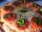
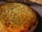
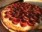

Alguns tipos e sabores de pizzaAlguns tipos e sabores de pizza
Alguns tipos e sabores de pizzaAlguns tipos e sabores de pizzaA variedade de cobertura que se pode colocar sobre uma pizza é quase infinita, entretando, algunmas preparações são quase tradicionais e tem fiéis seguidores:
 Margherita |
 Mussarela |
 Portuguesa Portuguesa |
 Calabresa |
 California California |
 Pepperoni Pepperoni |
 Quatro queijos Quatro queijos |
 Bacon Bacon |